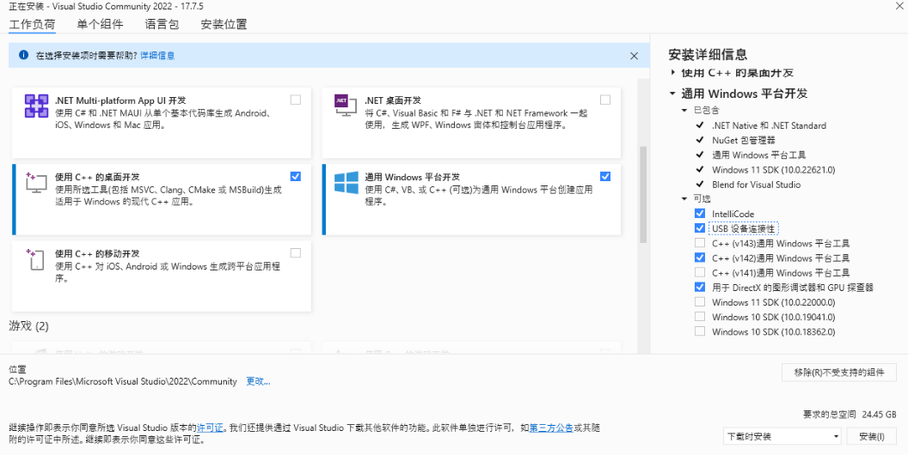
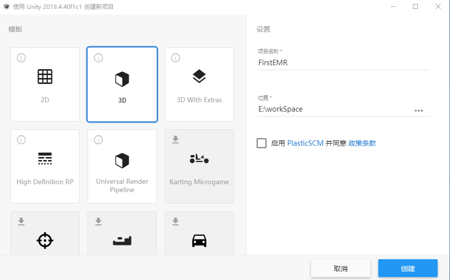

环境安装
EMR的低层依赖于MRTK框架MRTK非常的强大它理论上可以支持跨设备，这也是EMR选择它作为低层隔离设备的主要原因，但MRTK环境的安装需要一点时间它并不难只是繁琐而且对计算机环境、操作系统都有一定的要求，你可以按照以下步骤进行安装：
硬件环境要求：
| CPU： | Intel 桌面i7第6代以上或AMD Ryzen 5 1600及以上 |
| GPU： | 支持 DX12的 NVIDIA GTX 1060 或者 AMD Radeon RX 480(2GB) 及以上 |
| 内存： | 支持 DDR4 2600 及以上频率的16G内存及以上 |
| 硬盘： | 240GB 固态硬件作为操作系统及各开发工具的安装盘 |
| 显示器： | 1920 * 1080 及以上分辨率的显示器 |
| USB： | 至少一个USB接口 |
软件环境要求：
| 操作系统： | Win10 专业版 64位 |
| Visual studio： | Microsoft Visual Studio Community 2022 (64 位) |
| Unity： | Unity version 2019.4.40 personal |
| MRTK： | MRTK2.6.1 |
- 安装Win10 SDK：
SDK下载地址
| 10.0.19041.685 | https://go.microsoft.com/fwlink/p/?linkid=2120735 |
| 10.0.18362.1 | https://go.microsoft.com/fwlink/?linkid=2083448 |
| 10.0.17763.1 | https://go.microsoft.com/fwlink/p/?LinkID=2033686 |
| 10.0.20348.0 | http://software-download.microsoft.com/download/pr/20348.1.210507-1500.fe_release_WindowsSDK.iso |
开始安装：
- 1、新建目录 C:/Win10 SDK
- 2、双击下载的SDK并将安装目录设置为 C:/Win10 SDK，如下图：
-
- 3、安装所有下载的win10 sdk
- 安装Visual studio 2022：
- 从微软 visual studio 官网：https://visualstudio.microsoft.com/zh-hans/ 下载 visual studio 2022 Community 版本
- 双击下载好的安装文件：
- 在弹出的安装选项中分别选种 使用c++的桌面开发、通用Windows平台开发；勾选右侧的USB设备连接性、c++(v142)通用tWindows平台工具，如下图：
-

- 点击安装
-

- 等待安装完成
- 安装Unity：
- 先安装Unity Hub
- 打开Unity Hub，选择左侧的安装，点击右上角的安装，选择内容区中的“官方发布网站”
-
- 从下载页面选择untiy 2019 4.40，点击右侧的“从Hub下载”
-
- 取消 Microsoft Visual Studio Community 2019模块前面的复选框、勾选Universal Windows Platform Build Supper模块、Windows Build Support（IL2CPP）, 如下图：
-
- 点击INSTALL等待安装完成
-
- 设置开发者选项：
- 进入Win10开发者选项设置，打开“开发人员模式”选项
-
- 复制Win SDK：
- 在Program Files (x86)\Windows Kits目前下新建一个文件夹名称就为：10
- 将C:\Win10 SDK\Extension SDKs这个目录直接复制到刚刚新建的这个文件加中
- 下载MRTK2.6.1：
- 工程创建与项目配制：
创建工程：
- 打开Unity Hub 点击右上角的新建按钮创建一个3D项目，例如：FirstEMR
-

- 打开编译设置选项 File -> Build Settings 在左侧的 Platform中选种 Universal Windows Platform 选项 并点击弹窗右下角的 Switch Platform 按钮
-
导入MRTK：
- 将以上下载的这四个MRTK的内容依次导入Unity
-
-
-
- 选择Applay
- 按上述步骤依次导入下载的全部MRTK包
导入TextMeshPro：
- 依次从菜单中选择 Window -> TextMeshPro -> Import TMP Essential Resources 导入TextMeshPro
-
配置项目：
- 打开项目设置选项 Edit -> Project Settings
-
- 在 Project Settings窗口在侧点击 Player 然后在它的右侧 Publishing Settings 卷展栏下的 Expiation date 中点击 create 按钮创建证书
-
- 在 Publishing Settings 卷展栏下的 Capabilities 选项区中检查并选种 InternetClient、 WebCam、 Microphone、SpatialPerception、GazeInput这几个选项
-
- 在 XR Settings 卷展栏下勾选 Virtual Reality Supported选项 待导入完成在 Window Mixed Reality 中将 Depth Format 设置为：24-bit depth、 勾选 Enable Depth Buffer Sharing、将Stereo Rendering Mode：设置为：Single Pass Instanced，如下图：
-
- 创建Mixed Reality Toolkit实例 Mixed Reality Toolkit -> Add to Scene and Configure
-
- 设置代码关联：（该步骤不是必须设置它是为了能在Visual中有代码提示功能）
- 打开Unity首选项 Edit -> Preferences 将右侧 External Script Editor 设置为 Visual Studio Community 2022
-
- EMR安装
- 从gitHub上下载 EMR 包
-
- 在Unity中依次选择菜单 Window -> Package Manager , 打开 Package Manager 弹窗，如下图：
-
- 点击右上角的 “+” 号按钮在弹出的菜单中选择 “Add package fram disk...” 菜单项， 如下图：
-
- 在弹出的文件选择弹窗中选择刚刚下载的包内的 package.json 文件导入EMR包， 如下图：
-
- 至此EMR包的导入已完成，在Package Manager弹窗内你可以看到 EMR 包已存在列表中， 如下图：
-
- 在 MRKT 中配制 EMR
- 在左侧 Hierarchy 下点击 MixedRealityToolkit 实例
-
- 将右侧 MixedRealityToolkit 的配制文件修改成：EMRHTwoMixedRealityonfiaurationProfile，如下图：
-
- 选种Input选项，将它的配制文件修改成：EMRHTwoMixedRealityInputSystemProfile，如下图：
-
- 点击下方的Speech按钮卷展栏，将它的配制文件修改成：EMRHTwoMixedRealitySpeechCommandsProfile，如下图：
-
- 选种Spatial Awareness选项，将它的配制文件修改成：EMRHTwoMixedRealitySpatialAwarenessSystemProfile，如下图：
-
- 点击下方的 Windows Mixed Reality Spatial Mesh Observer 按钮卷展栏，将它的配制文件修改成：EMRHTwoMixedRealitySpatialAwarenessMeshObserver，如下图：
-
- 选种 Diagnostics 选项，去掉对 Enable Diagnostics System 的勾选
-
- 在左侧 Hierarchy 下点击 MixedRealityToolkit 实例，在右侧给该实例添加 EMRStart 组件，如下图：
-
至此整个环境的安装及配制已完成，现在可以按文档的说明进行开发了